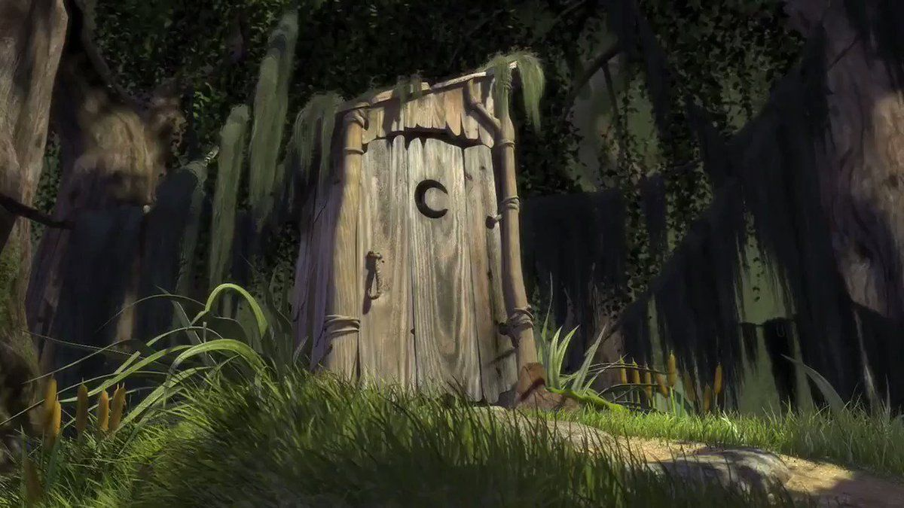

Биография
Шрек - большой зелёный огр. Всю жизнь прожил на болоте в одиночестве.
О детсве Шрека мало известно, но в одном из фильмов он говорил, что его отец все время хотел его съесть.
После похода по поручению Лорда Фаркуада, встретил Фиону, с которой вскоре поженился.
Верным другом Шрека является осёл, по имени Осёл, по прозвищу Ишак.
Обручившись с принцессой фионой, Шрек стал наследником пристола, а после чего и королём.
Формула его успеха: Гений2+Миллиардер3+Филантроп4=Success

Навыки
Hard skills
- Java
- SpringBoot+Security+Cloud
- Sql(опыт работы с Postgresql, Mysql)
- C#(в том числе Entity Framework, ASP.Net core)
- C++/C
- Алгоритмы и структуры данных
function() {
console.log("Hello world");
}
Soft skills
- Коммуникабельный
- Организовнный

Опыт работы
- Google: CEO, 2010-2015
- Amazon: CTO, 2015-2017
- Пятерочка: Кассир-консультант, 2017-2020
- Самокат: Пеший-курьер, 2020-н.в
⢀⡴⠑⡄⠀⠀⠀⠀⠀⠀⠀⣀⣀⣤⣤⣤⣀⡀⠀⠀⠀⠀⠀⠀⠀⠀⠀⠀⠀⠀
⠸⡇⠀⠿⡀⠀⠀⠀⣀⡴⢿⣿⣿⣿⣿⣿⣿⣿⣷⣦⡀⠀⠀⠀⠀⠀⠀⠀⠀⠀
⠀⠀⠀⠀⠑⢄⣠⠾⠁⣀⣄⡈⠙⣿⣿⣿⣿⣿⣿⣿⣿⣆⠀⠀⠀⠀⠀⠀⠀⠀
⠀⠀⠀⠀⢀⡀⠁⠀⠀⠈⠙⠛⠂⠈⣿⣿⣿⣿⣿⠿⡿⢿⣆⠀⠀⠀⠀⠀⠀⠀
⠀⠀⠀⢀⡾⣁⣀⠀⠴⠂⠙⣗⡀⠀⢻⣿⣿⠭⢤⣴⣦⣤⣹⠀⠀⠀⢀⢴⣶⣆
⠀⠀⢀⣾⣿⣿⣿⣷⣮⣽⣾⣿⣥⣴⣿⣿⡿⢂⠔⢚⡿⢿⣿⣦⣴⣾⠁⠸⣼⡿
⠀⢀⡞⠁⠙⠻⠿⠟⠉⠀⠛⢹⣿⣿⣿⣿⣿⣌⢤⣼⣿⣾⣿⡟⠉⠀⠀⠀⠀⠀
⠀⣾⣷⣶⠇⠀⠀⣤⣄⣀⡀⠈⠻⣿⣿⣿⣿⣿⣿⣿⣿⣿⣿⡇⠀⠀⠀⠀⠀⠀
⠀⠉⠈⠉⠀⠀⢦⡈⢻⣿⣿⣿⣶⣶⣶⣶⣤⣽⡹⣿⣿⣿⣿⡇⠀⠀⠀⠀⠀⠀
⠀⠀⠀⠀⠀⠀⠀⠉⠲⣽⡻⢿⣿⣿⣿⣿⣿⣿⣷⣜⣿⣿⣿⡇⠀⠀⠀⠀⠀⠀
⠀⠀⠀⠀⠀⠀⠀⠀⢸⣿⣿⣷⣶⣮⣭⣽⣿⣿⣿⣿⣿⣿⣿⠀⠀⠀⠀⠀⠀⠀
⠀⠀⠀⠀⠀⠀⣀⣀⣈⣿⣿⣿⣿⣿⣿⣿⣿⣿⣿⣿⣿⣿⠇⠀⠀⠀⠀⠀⠀⠀
⠀⠀⠀⠀⠀⠀⢿⣿⣿⣿⣿⣿⣿⣿⣿⣿⣿⣿⣿⣿⣿⠃⠀⠀⠀⠀⠀⠀⠀⠀
⠀⠀⠀⠀⠀⠀⠀⠹⣿⣿⣿⣿⣿⣿⣿⣿⣿⣿⡿⠟⠁⠀⠀⠀⠀⠀⠀⠀⠀⠀
⠀⠀⠀⠀⠀⠀⠀⠀⠀⠉⠛⠻⠿⠿⠿⠿⠛⠉